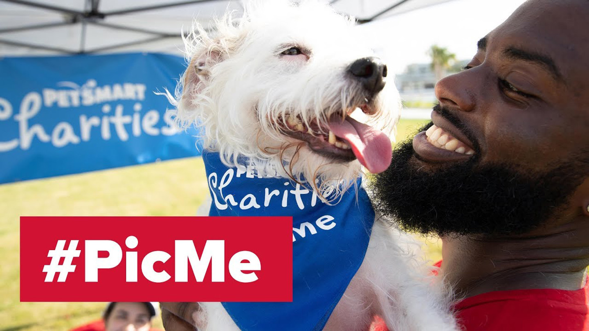

Search by Location
Loli is super friendly puppy with nothing but love in her heart. She’s had a rough start, but that hasnt stopped her from being happy! She loves playtime, hugs, and if you give her a treat she might just do a little dance for you!
Quiet, calm, and such a sweet-heart. Ika loves naptime, cuddles, and curling up in her favorite blanket. While she’s generally quite calm, she sure does love to jump! Throw a frisbee, and we guarantee she’ll catch it!
ADOPT! The best way to help is to take one of these furry friends home. Providing our pets with best and most loving homes has always been our goal and we believe that adoption is the best way to do this!
DONATE! Adopting a pet comes with a lot of responsibilites and we understand that not everyone can accomodate a pet in their life. If you can’t adopt please consider donating so that we can provide our pets with the best care until they find their forever homes!
PICME! Can’t adopt or donate? No problem! You can still help us by posting a picture of one of our adoptees on social media with #PICME. Help spread the word!
